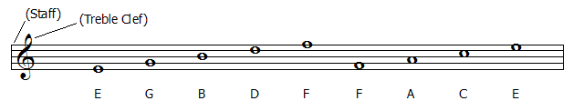
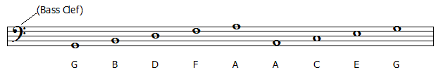

| The staff is a standard system of five lines and four spaces which indicate the pitch of a note. |
| Notes can also appear above or below the staff and are written using short lines (ledger lines) and their associated spaces. |
| The clef symbol indicates how a given system of staves should be read. |
| The example below shows the note assignments for the commonly used treble clef and the bass clef.. |
|  |
|  |
Return to music theory.